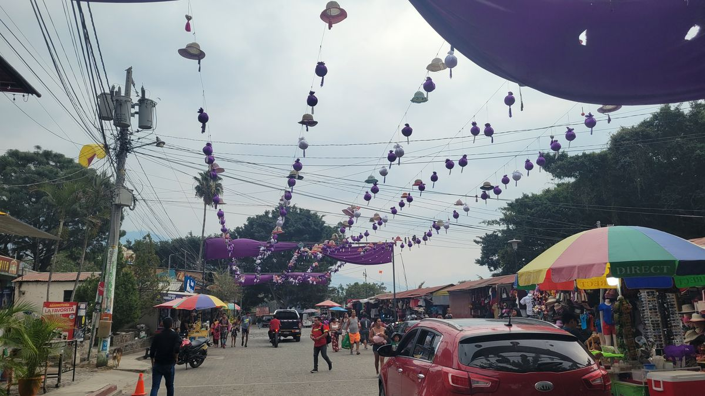
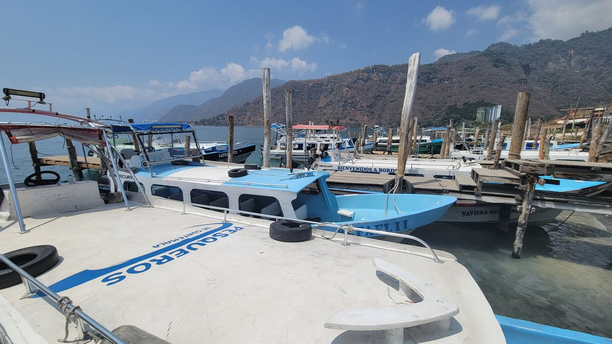
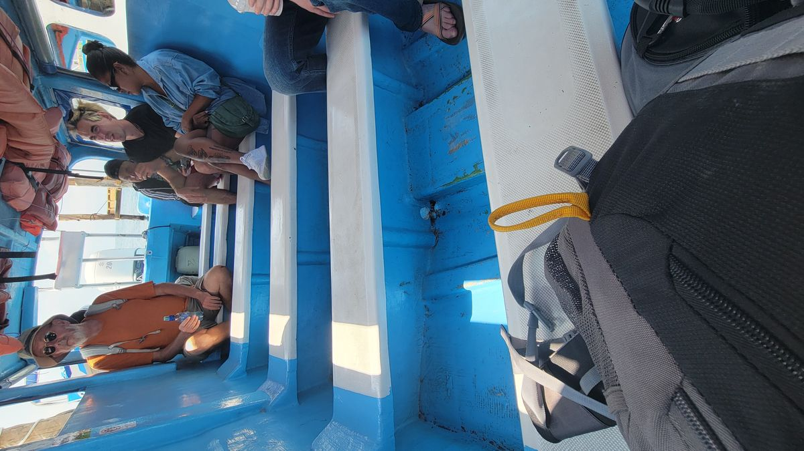
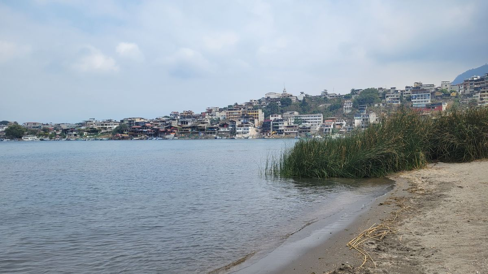
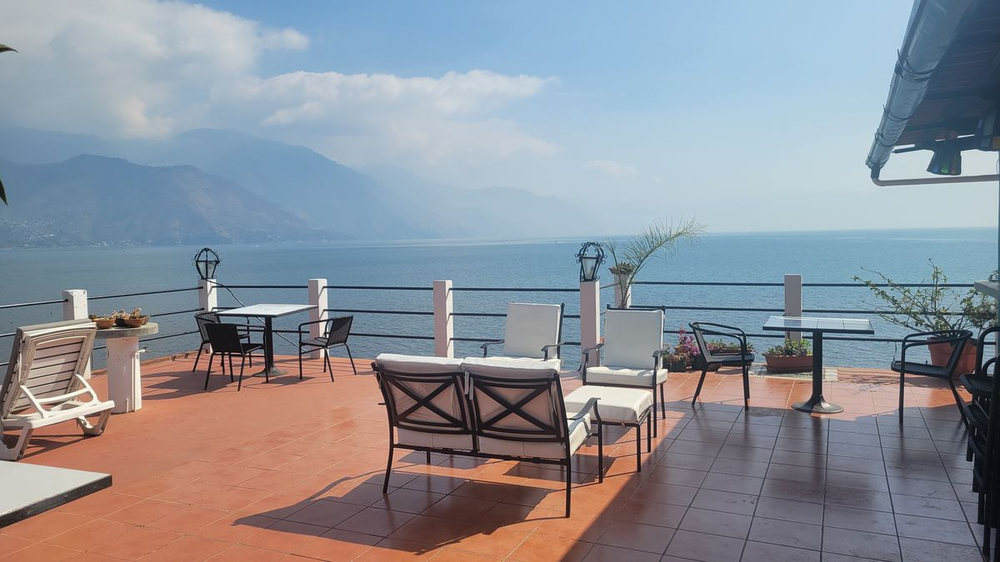
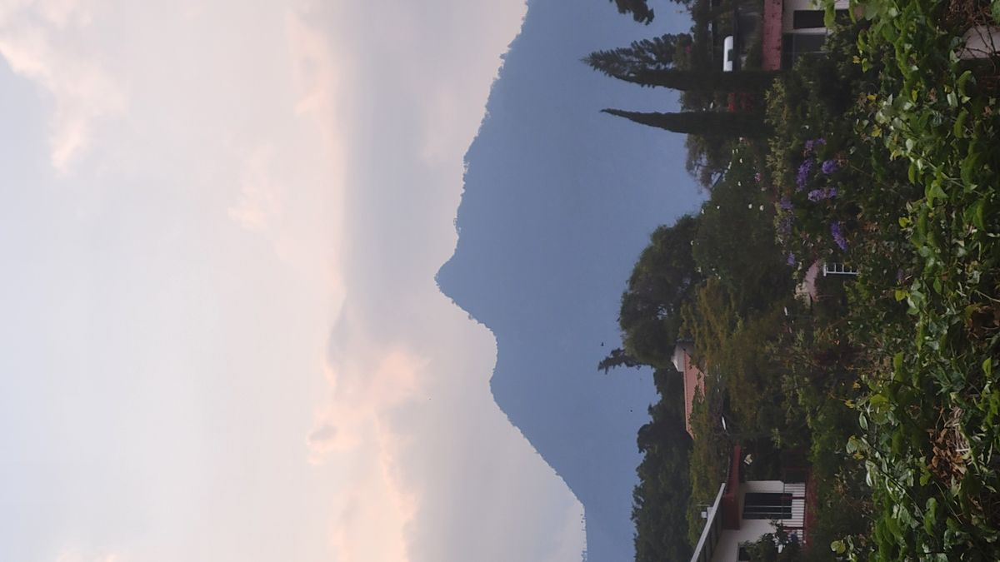
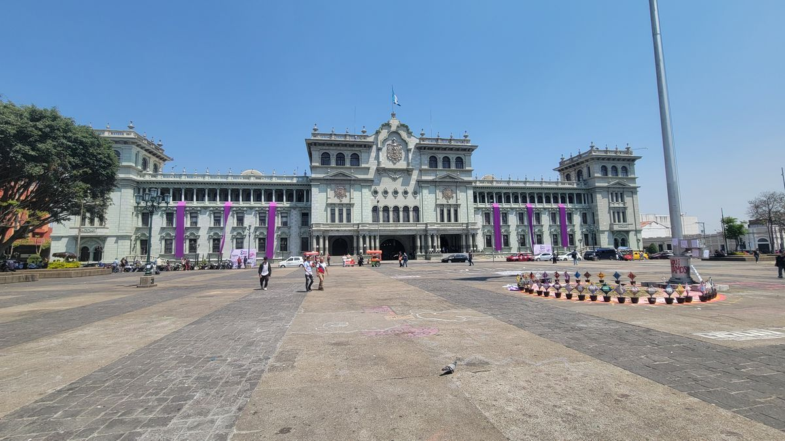
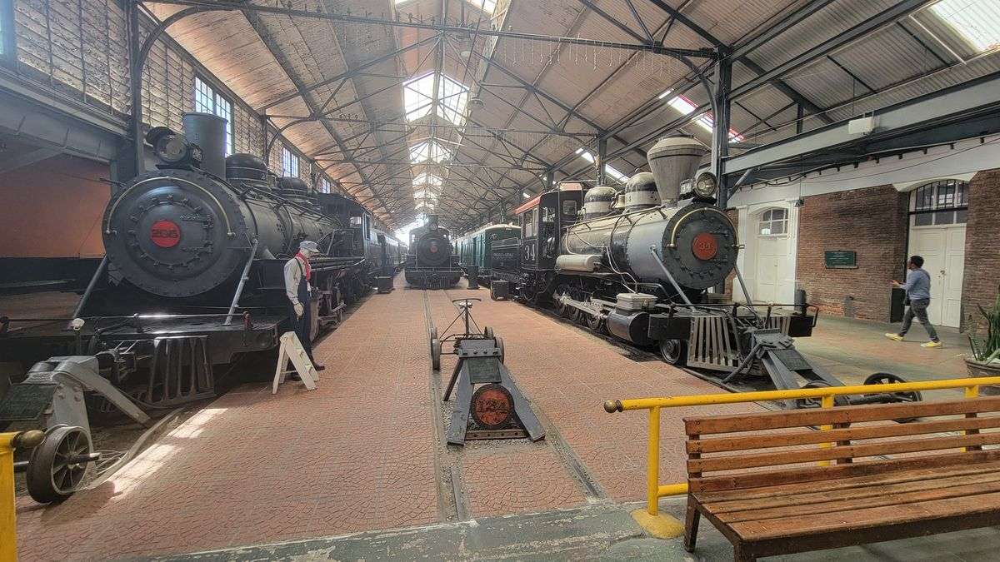

Lake Atitlan
About 2 ½ hours from Antigua is Lago de Atitlan or Lake Atitlan in English. Ringed by 3 separate Volcanoes, the lake basin itself is a former caldera formed from a volcanic eruption an estimated 84,000 years ago. Some people call this the most beautiful lake in the world. I wouldn’t know because a thick layer of haze kept the surrounding scenery pretty well hidden most of the time I was there. I did capture a few fleeting glances in the few days I was there.
The village of Panajachel is the main jumping off point for the many Mayan Villages that surround the lake. Most notable for its textile shops Panajachel hosts tourist from around the world.

When you’re ready to leave and explore the Mayan villages surrounding the lake, small boats called “launches” depart regularly from a dock near the main street. There are 11 villages that surround the lake. Most accessible only by boat from Panajachel. Or, let me clarify, accessible most easily by boat. Only one village has no roads and only accessible from the water. Others are connected by road but need considerable amounts of driving to reach.


When I arrived in Panajachel I had no idea which village or villages I wanted to see, but after conversing with other travelers in my Hostel I decided the first place I would visit would be San Juan de Laguna, one of the furthest villages from Panajachel.

About 45 minutes on a small boat across the lake and I arrived in San Juan. I had scored a pretty killer deal on a private room at a hotel and opted for that for a few days over a Hostel. Unfortunately, just moving across the lake did not remove the thick haze from the lake and I was stuck with the same grey and dull vistas from Panajachel.


A lot of the villages around the lake each have a nice for different kinds of touring people may want to do. San Juan was the backpacker’s hub, filled with Bars and Restaurants and lots of water activities. Others specialize in health and wellness retreats and other in the manufacturing of textile and other crafts. I really didn’t have a singular motivation for my trip, just to see and experience the lake and its glory. After a few days, and felling a little defeated from the Spring time haze of the lake. I took off for other adventures.
Guatemala City.
Usually, I would reserve a special post for a National Capital, but don’t know how much I will do that for Central American Capitals. The treasures of Central America are held jungles, beaches and nature. Not in the capitals, which are strictly utilitarian. But, also because of their utilitarian nature, make them the easiest point to depart and exit from these smaller countries. Guatemala City is no different. The city offers nearly no unique attractions and its main square isn’t much different from other cities its size. For me, the only notable thing I saw was a Rail Road museum documenting the rail infrastructure of Guatemala’s past. For Guatemala City, get in, get out and see what else the country has to offer.

